Jiao Zhao — jiaoz17@mit.edu
Real estate speculation is crucial in housing markets and can affect housing affordability. The perception of housing as a profit-generating asset has significantly impacted the stability and accessibility of housing as a fundamental service. Speculation also heavily influences the quest for equity in housing. This exploratory analysis examines speculative behavior to inform evidence-based policymaking. I specifically focus on investor activities and property flipping. I explored three overarching domains: temporal patterns, spatial distribution, and transaction networks.
The dataset contains real estate transaction records in the City of Boston from 2000 to 2023. It includes details about each transaction, such as property type, sale price, transaction date, buyer and seller information, and property characteristics. Specifically, the dataset contains a field for identifying whether a property has been flipped in the past years, which is very important to analyze speculation but requires further validation on how to identify flips.
Missing values are found in the following fields: "flip_horizon", "month_horizon", "price_diff", "price_diff_pch", "amenity", "prsldate", "R1F_total", "style", "restype_R1F", "yearbuilt", and "lasqbin", as well as "buy_horizon".Among these fields, "yearbuilt", "lasqbin", "R1F_total", "style", and "restype_R1F" have missing values that raise concerns about the quality of the dataset. The following visualization will either filter out the missing datasets if the percentage of total data points is relatively trivial or avoid using those fields if possible.
Then, I checked the categorical fields, and the results show that there are no values beyond the categorical limits in these fields. After reviewing the non-categorical but numeric fields, however, I found some unusual 0 values in the fields "lat" and "lon," so I used a geocoder to map the address to the correct latitude and longitude. After mapping latitude and longitude, I found that 1.25% of the data points are located beyond the Boston boundary, with some being quite far from it. To clarify in the following spatial analysis, I deleted those data points.
As the dataset spans a longer period and the transaction statistics used to evaluate flipping may not account for the time before or after, assessing it from the buyer's or seller's perspective presents a challenge. To cross-validate the definition and process of flipping, two filters for flipped transactions are employed to compare the results: 1. when either “buyer_side_flip” or “seller_side_flip” does not equal 0, indicating that this property is flipped based on prior and subsequent transactions; 2. when “flip_term” is categorized as "short," "medium," or "long," excluding “Non-flip." Using filter 1, there are 3,256 transactions; filter 2 yields 1,824 transactions. I suspect the flip situation in the field "flip_term" is marked only once, but this still requires further validation with more detailed metadata and data processing records.
Finding 1: The total number of overall transactions has remained steady over the past two decades, but there has been a noticeable peak in flipping activities since 2010.
The first question is whether there is a time-related change in the volume of transactions and if policy shifts or other environmental factors might influence overall activity. Specifically, does the amount or value of transactions change over time, and what is the general trend? To investigate, I analyzed three types of yearly transactions: (1) total transactions, (2) investor-involved transactions (where either the buyer or the seller is an investor), and (3) flipped transactions (where the “flip-term” field is not “Non-flip”). The findings indicate that flipped transactions have shown a marked increase after 2010. Total and investor-involved transactions fluctuate over time, with one notable exception in 2004, when transactions momentarily spiked.
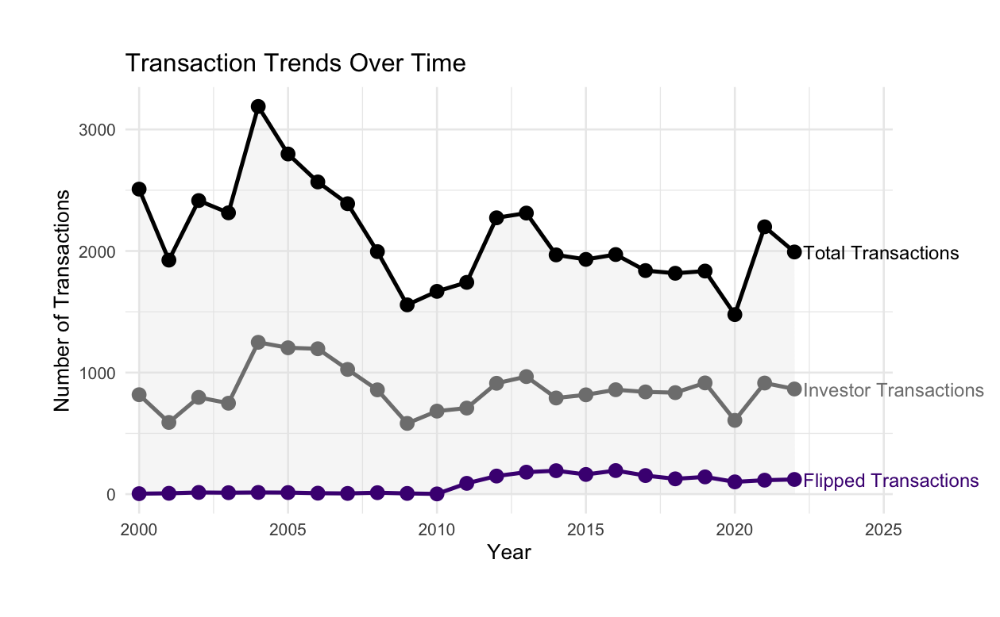Figure 1: Transactions Change Over Time.
The flipped situation seems strange. As I looked through background materials and consulted a lecturer focused on housing studies, I found that no dramatic changes occurred in either the economy or policy in 2010. Therefore, I will further investigate all indicators related to flipping. Six metrics are used to detect the temporal patterns for different types of transactions: (1) Long-term flips: Properties resold within 12-24 months; (2) Medium-term flips: Properties resold within 6-12 months; (3) Short-term flips: Properties resold within 0-6 months; (4) Buy-side flips: Transactions where the property is purchased and subsequently flipped; (5) Sell-side flips: Transactions where a previously purchased property is sold in a flip; (6) Two-sided flips: Transactions where both the purchase and sale qualify as flips.
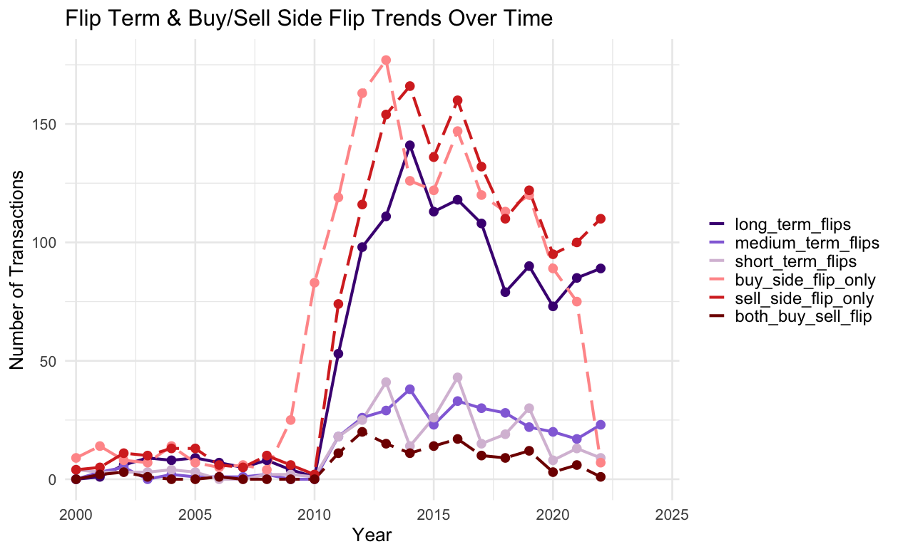Figure 2: Transactions Change Over Time
As shown in Figure 2, before 2010, all types of flips maintained low and stable levels, with fewer than 20 transactions per year. A dramatic shift occurred between 2010 and 2015, characterized by a significant increase in flipping activity, with long-term, buy-side, and sell-side flips reaching their peak volumes. Other flipping activities also saw an increase, though less pronounced. The period following 2015 displayed a general downward trend across all categories. This suggests that either the statistical method for identifying flipping activities needs to be reviewed, or that the 2010-2015 time period requires further examination regarding policies and potential factors that encourage flipping.
Finding 2: 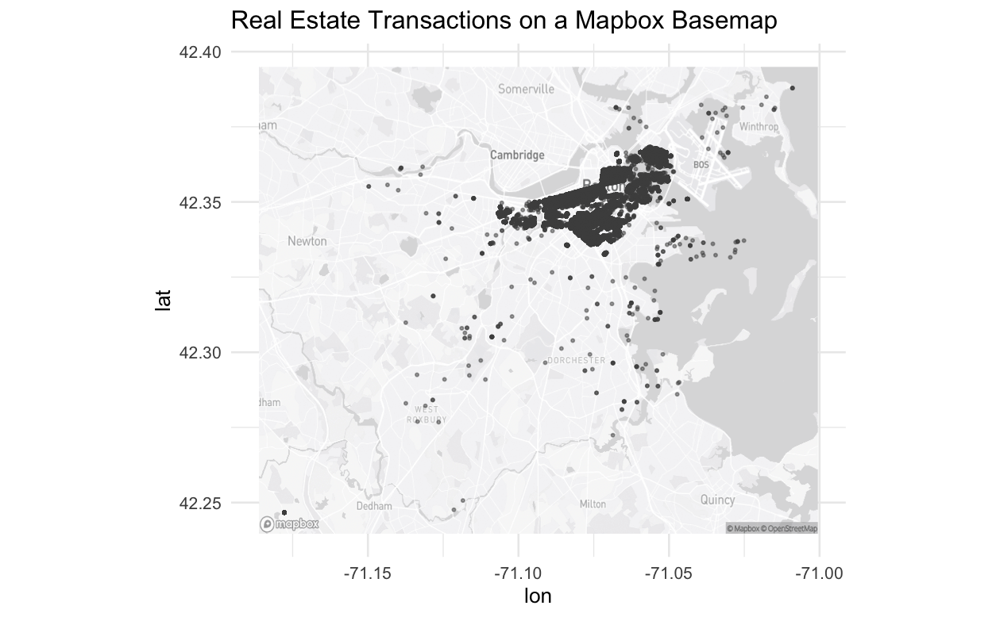
Figure 3: Spatial Distribution of Transactions
[Continue with more analysis or insights from the second visualization.]
[Final observations and conclusions from the third image.]
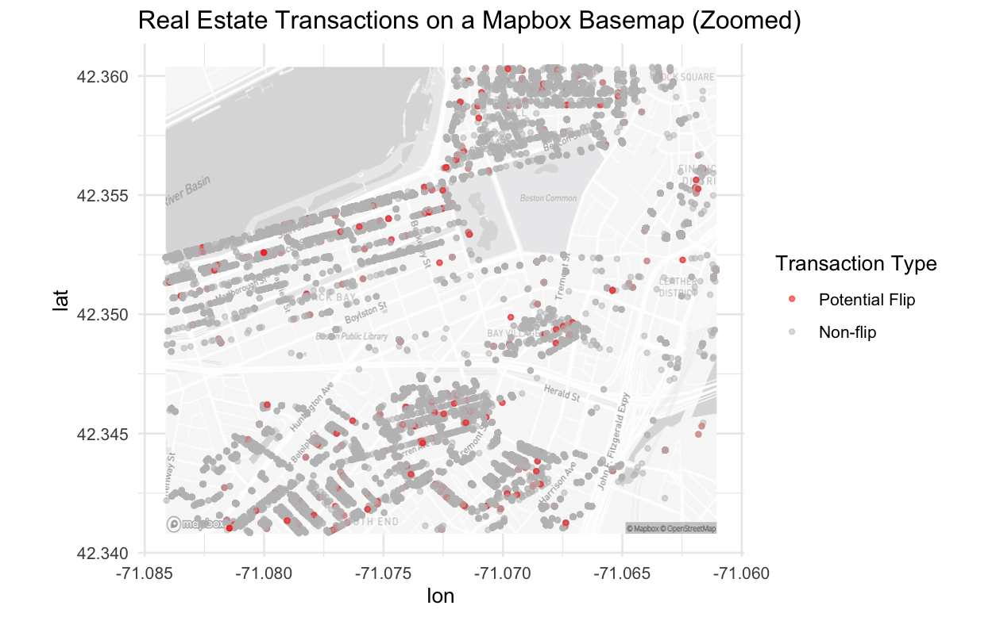Figure 4: Spatial Distribution of Flipped/NonFlipped Transactions
[Continue with more analysis or insights from the second visualization.]
[Final observations and conclusions from the third image.]
Finding 3: Transaction patterns reveals strong preferences for exchanges between similar entities. In investor transactions, while small investor-to-small investor transactions dominate in terms of transaction volume, institutional investor-to-institutional investor transactions account for approximately half of the total transaction value. Regarding entity types, transactions between LLCs and between LLCs and trusts emerge as the most significant patterns, suggesting a strong presence of structured property ownership transfers in the market.
One aspect that is overlooked in Homes for Profit: Speculation and Investment in Greater Boston is the transaction behavior among different types of buyers and sellers. My question is: how can we understand the transfer of properties? What are the dynamics of property transactions? Does a larger investor typically sell property to a smaller investor? For instance, are LLCs more likely to sell to another LLC?
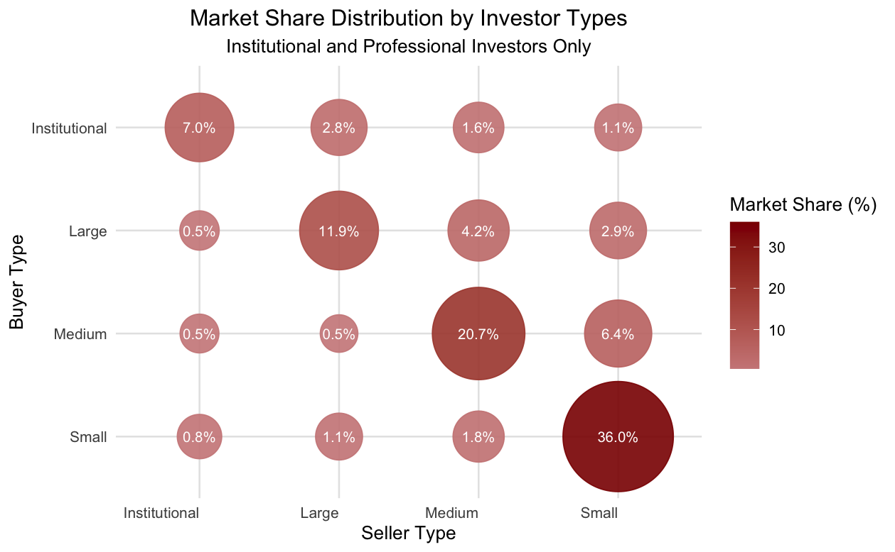Figure 5: Market Share Distribution by Investor Type
Figure 5 is a bubble grid displaying market-share percentages (transaction counts/overall transactions) for each Buyer Type (rows) and Seller Type (columns). Each circle’s size and color reflect the percentage (larger/darker indicates higher). The labels in the bubbles present the exact market-share value for that pairing. Interestingly, transactions occur more frequently between the same type of investors. Transactions among small investors accounted for up to 36% of the total transaction market share. The amount of transactions serves as one measure, while value share (the price of the last sale/accumulated price) would be another good indicator to examine the influence of those transactions. Figure 6 follows the same logic and explains the value share of transactions between investors.
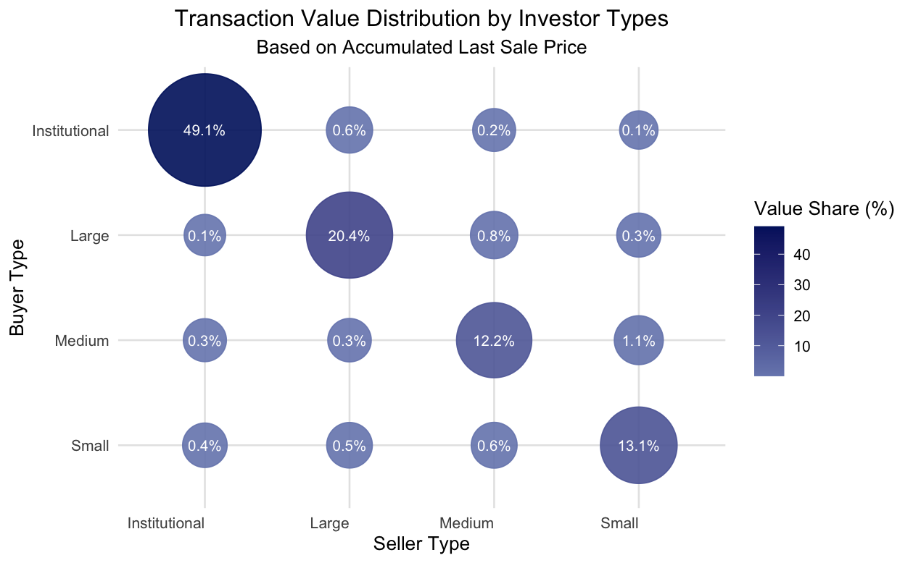Figure 6: Value Share Distribution by Investor Type
Figure 6 is interesting when compared to Figure 5. Small-scale investor transactions seem to lead in market share despite having a much lower value share; instead, transactions between institutional investors account for around 50% of the value share, surprisingly. In future analysis, I will potentially focus on institutional investors due to their influence on the market.
In Figures 7 and 8, I examined the price differences between two types of transactions: small investor to small investor and institutional investor to institutional investor. I also explored whether these transactions have a relationship with flipping activities and the values they gain through transactions.
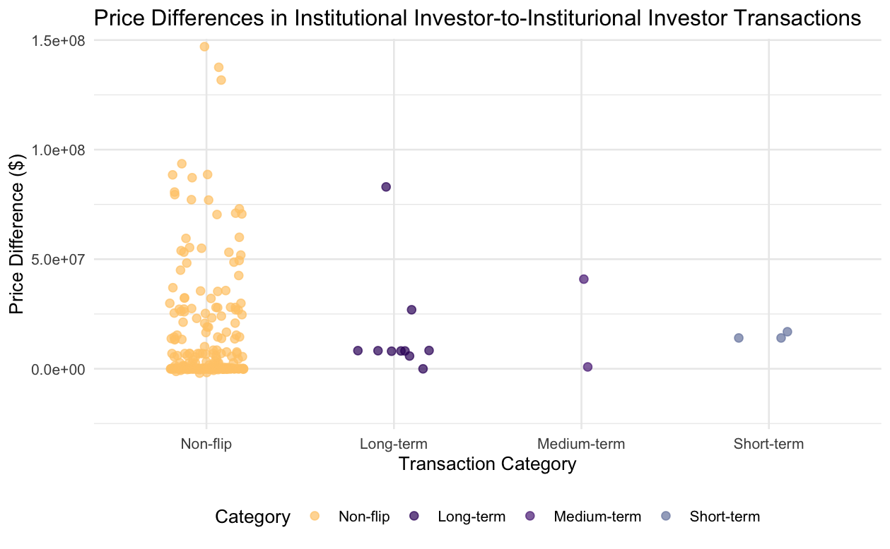Figure 7: Price Difference between Institutional Investors' Transactions
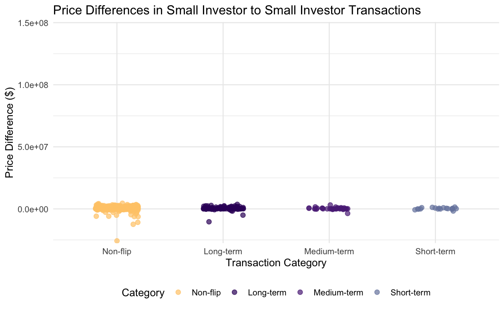Figure 8: Price Difference between Small Investors' Transactions
In Figures 7 and 8, there is a strong contrast with price difference; institutional investor transactions have been less identified as flips, particularly short-term flips. However, small investors have much less price difference, even negative price difference. Additionally, more transactions are identified as flips, indicating that there are more frequent transactions.
In Figure 9, I analyze both market share and value share using the same rationale discussed earlier, but with an emphasis on the types of seller and buyer entities involved. Institutional investors play a crucial role in the market. I explored which entities exert the greatest influence on buyer and seller categories. Whether pertaining to government bodies, LLCs, businesses, banks, trusts, or entities like Fannie Mae and Freddie Mac, they appear to be largely uncorrelated. Notably, transactions involving LLCs represent up to 45.7% of the market share. Additionally, LLC and trust transactions together account for 32.3% of the market share, indicating that corporate transactions warrant further investigation. Furthermore, transactions by LLCs constitute over 80% of the total value share in the transaction market.
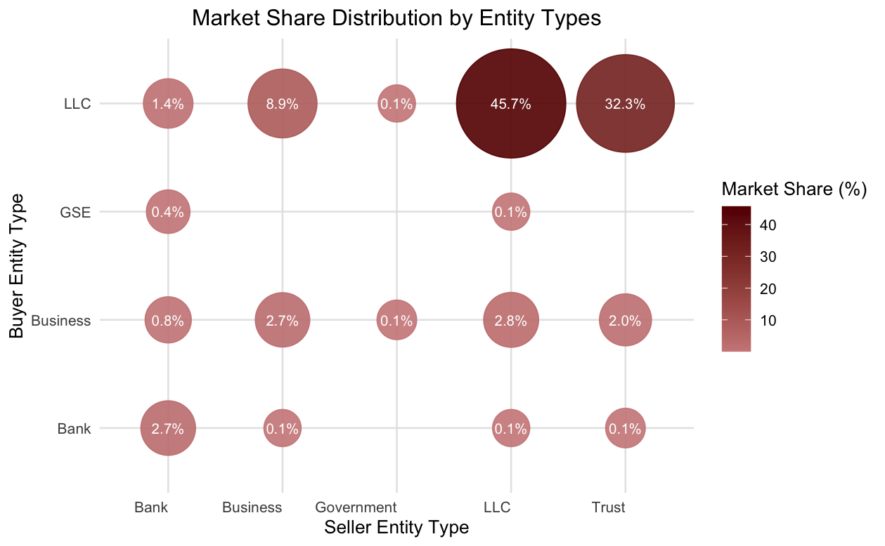Figure 9: Market Share Distribution by Buyer/Seller Entities Type
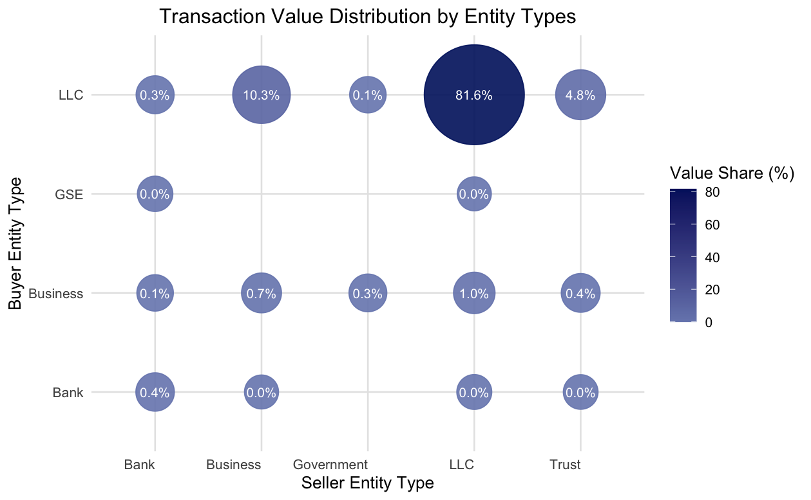Figure 10:Value Share Distribution by Buyer/Seller Entities Type
Then I further investigate whether the buyer and seller bots are LLCs and examine the flipping situation, including their level of participation. Additionally, I want to assess how much price difference we could achieve. In conclusion, most transactions between LLCs are non-flips (which needs further investigation because I question the definition of non-flip as stated in data quality), and they are more likely to be engaged in long-term flipping activities.
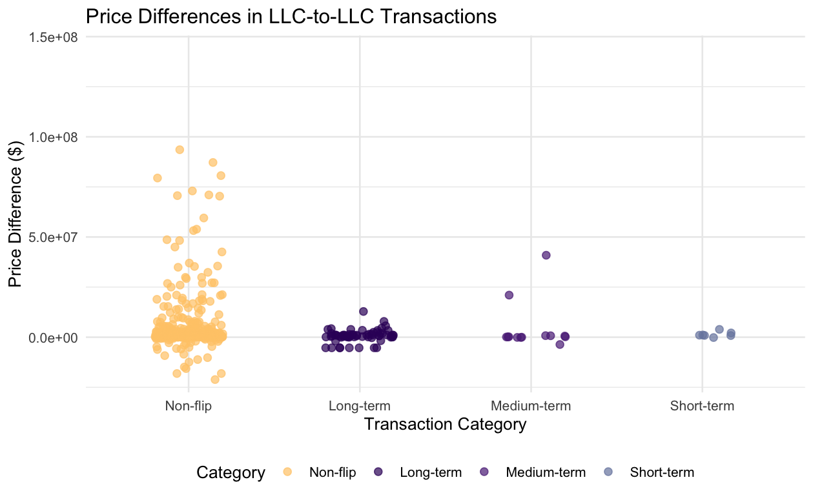Figure 11: Price Difference between LLCs' Transactions
Overal, my analysis reveals a clear pattern of centralized consolidation in housing market speculation, evident in both spatial and network dimensions. Spatially, transactions and flipping activities are concentrated in specific neighborhoods, particularly in central Boston. The transaction network analysis shows a dominance of institutional investor-to-institutional investor exchanges, along with significant activity between corporate entities (LLC-to-LLC and LLC-to-trust transactions). These dominant transaction patterns not only account for a substantial share of transaction volume but also represent a disproportionate share of total transaction value and realized profits, indicating a market concentration among larger, institutional players.